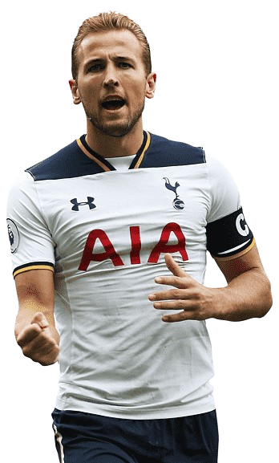
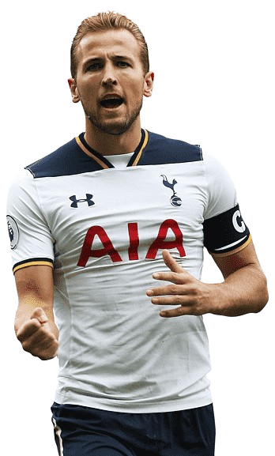
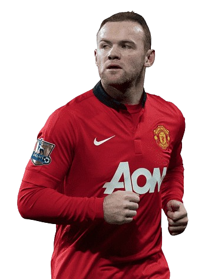
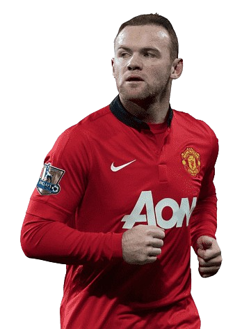
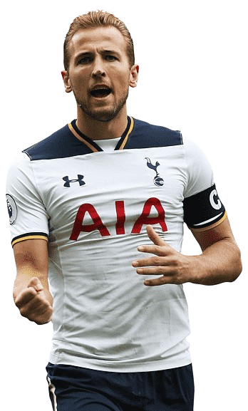
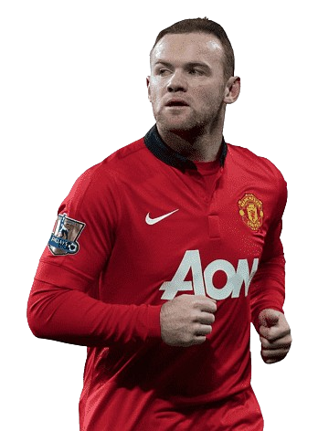
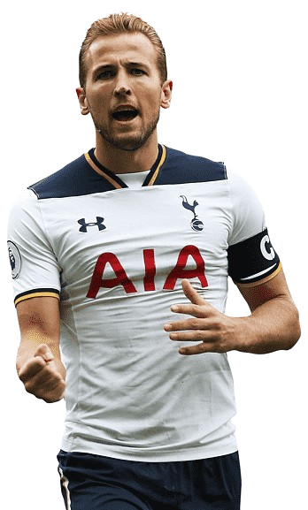
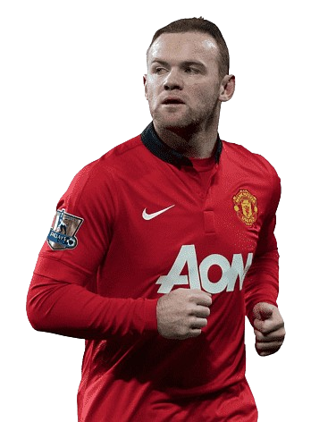

 

 



On this page, you'll discover the most prolific point-scorers in Fantasy Premier League history — elite players who delivered season after season with unmatched consistency, racking up record-breaking totals and cementing their legacy as FPL greats.
Wayne Rooney was the embodiment of consistency and versatility during his time in the Premier League. He delivered impressive FPL returns throughout his career thanks to his style of play:
Frank Lampard redefined what it meant to be a goal-scoring midfielder in FPL. He stood out thanks to these consistent traits:

Steven Gerrard was a talismanic figure for Liverpool and a valuable fantasy asset because of:
Since 2017, Mohamed Salah has been a must-have FPL asset for many managers due to:

Petr Čech stands as the top goalkeeper in FPL history, earning his status by: